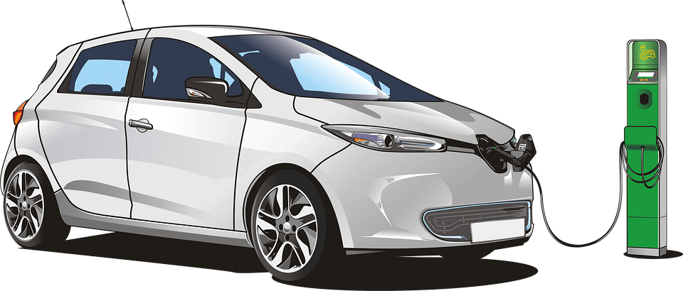
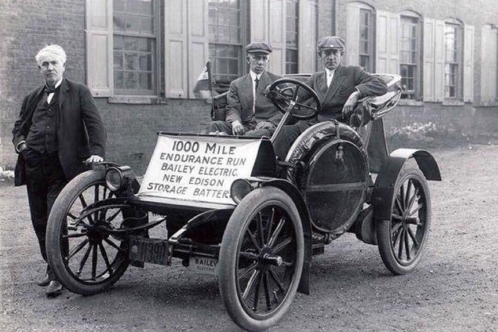
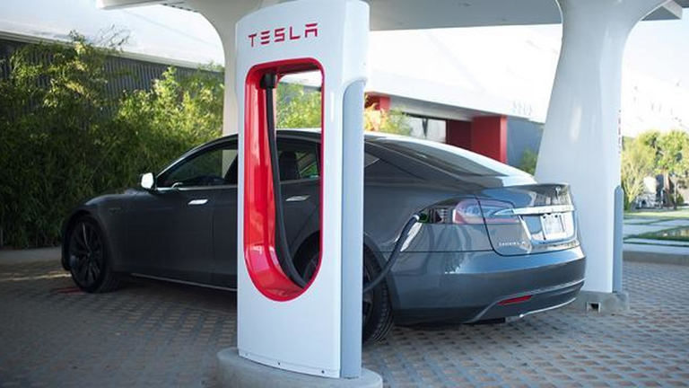
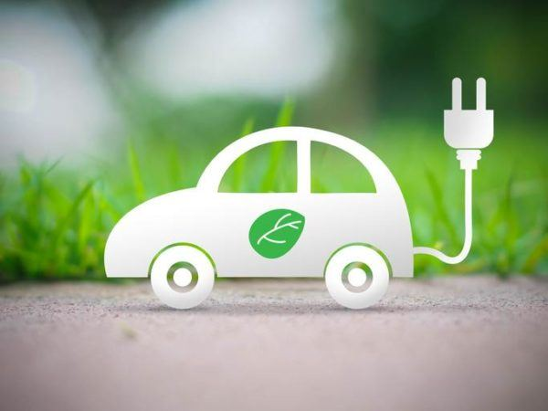

Coches eléctricos
Definición 
Los coches eléctricos son todos aquellos automóviles que se alimentan unícamente de energía eléctrica.
Existen diversas formas de alimentar un coche eléctrico como por ejemplo, la pila de hidrógeno, el motor de combustión o la batería de litio.
Historia
Los coches eléctricos están teniendo cada vez más peso dentro del mundo del automóvil. Y, aunque parezca que surgieron a principios del siglo XXI, su historia se remonta al siglo XIX. Concretamente a 1834, casi 30 años antes que el motor de combustión interna.

El primer vehículo eléctrico lo exhibió el británico Robert Anderson en una conferencia industrial, en 1935. Este automóvil funcionaba con una batería de petroleo crudo desechable.
Fueron varios los que, en esa época, inventaron coches eléctricos, pero todos ellos eran poco más que prototipos. No fue hasta finales de la década de 1880 que William Morrison inventó el primer vehículo eléctrico práctico.
A principios del siglo XX, apróximadamente el 38% de los automóviles que había en circulación en Estados Unidos eran eléctricos (un 16% más que los de gasolina). En esa época los coches eléctricos se hicieron cada vez más populares, hasta que Ford presentó la cadena de montaje rentable y la gasolina comenzó a ser más accesible.
No fue hasta la década de 1970 que los coches eléctricos volvieron a aparecer en escena. Debido a la escasez de gasolina y los elevados precios del petroleo, los fabricantes de automóviles comenzaron a plantearse otros tipos de fuentes de energía. Durante este periodo surgieron algunos proyectos, como el primer rover lunar eléctrico construido por la NASA.
Aunque los fabricantes hacían versiones eléctricas de algunos de sus modelos, no llegaban a cuajar entre la población. Hasta que en el 1997, Toyota presentó en Japon el Toyota Prius, el primer coche eléctrico híbrido producido en serie, en el 2000 se lanzó a nivel mundial y fué un éxito entre las celebridades, dando lugar a una nueva etapa de auge en el mundo de los vehículos eléctricos.

En 2003, Martin Eberhard y Marc Tarpenning vieron el aumento de la capacidad de las baterías de litio y decidieron crear Tesla Motors, una empresa únicamente de vehículos eléctricos. Gracias a su éxito, en la década de 2010 muchas otras empresas automovilísticas, como Nissan, se lanzaron al mundo de los coches eléctricos. Además, debido a la bajada de precio de las baterías de litio, los precios de los coches eléctricos descendieron y empezaron a ser más asequibles para los ciudadanos de a pie.
Desde 2010, las ventas de coches eléctricos han ido aumentando cada vez más. En 2020, por ejemplo, aumentaron un 41%, sobre todo en Europa. El país que lidera el ranking de ventas es Noruega, donde el 80% de los coche vendidos en 2021 son eléctricos, y se prevé que alcance el 100% a lo largo de 2021.
Este crecimiento del interés por los vehículos eléctricos no perece que sea pasajero, gracias a la preocupación por el medio ambiente los gobiernos estan empezando a imponer leyes para fomentar el uso de vehículos eléctricos y sostenibles. La Agencia Internacional de Energía predice que para finales de década habrán aproximadamente 145 millones de coches eléctricos en circulación, pero esta cifra podría aumentar a 230 millones en caso de que se cumplan los Objetivos Climáticos Globales del Acuerdo de París.
Ventajas:
No hay ninguna duda de que los coches eléctricos están ganando cada vez más terreno, pero ¿qué beneficios aportan estos vehículos frente a los de gasolina?
Para empezar, los coches 100% eléctricos no emiten ningún gas contaminante, por lo tanto no dañan el medio ambiente.

Además tienen la pegatina de "0 emisiones" de la Dirección General de Tráfico, esta distinción da muchas facilidades a la hora de circular en los centros urbanos. Por ejemplo, te ermite circular por las zonas con restricciones por alta contaminación, en algunas ciudades también se bonifica el uso de cargadores público o las tarifas de aparcamiento público. Y en algunas ciudades, como en Barcelona, el Impuesto de Matriculación es gratuito y se ofrecen descuentos de hasta el 75€ en el Impuesto de Vehículos de Tracción Mecánica.
Otras ventajas económicas es el ahorro. Como los coches eléctricos no consumen nigún combustible, si no que se cargan, su gasto equivale apróximadamente a 1€/km.
Y por último pero no por ello menos importante, los coches eléctricos no necesitan tanto mantenimiento como los vehículos de gasolina. Dejando de lado los neumáticos y los frenos, los coches eléctricos únicamente necesitan un chequeo de las baterías y los motores cada cierto tiempo. Eso reduce el número de visitas a los talleres mecánicos. Como los vehículos eléctricos no tienen un cambio de marchas con embrague y el número de componentes en movimiento es mucho menos que el de un coche de gasolina, la probabilidad de que uno de sus elementos se averíe es menor.
En conclusión, si buscas un vehículo con el que ir por la ciudad, la mejor opción es el coche eléctrico ya que , no solo recibes muchas bonificaciones, si no que también contribuyes a reducir el número de emisiones de CO2.
Consejos:
Aquí os dejamos un video con varios sonsejos sobre el mantenimiento de la batería de tu coche eléctrico: